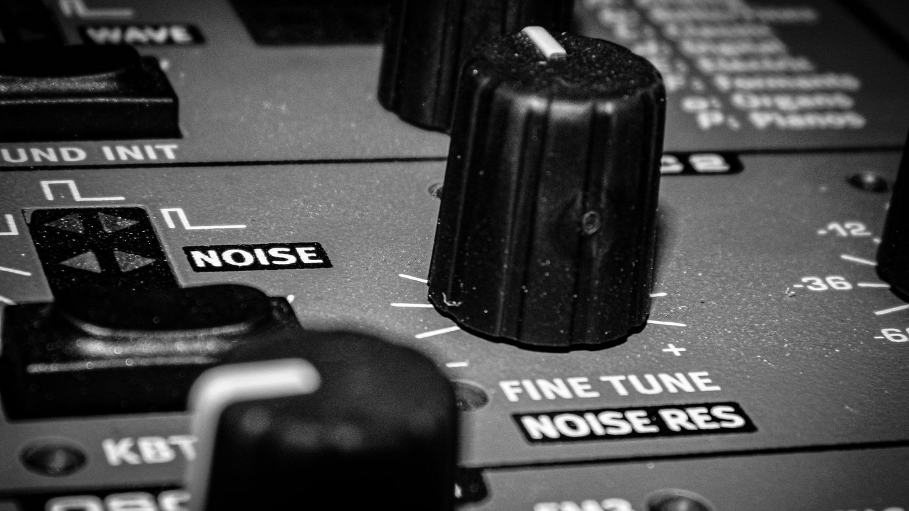

SYNTHLUCIDA
Sound as Space and Emotion

At the heart of my creation is a pure fascination with sound itself. I spend countless hours twisting physical hardware knobs, patching machines, and layering analog and digital textures, searching for that precise moment when a raw electrical signal comes alive, gains organic warmth, and begins to tell a story.
This obsession with a specific, deep atmosphere drove me to craft my own custom instrument. The result is Pure Soundscapes—a dedicated virtual rompler packed with my signature sounds, allowing you to tweak the essential parameters and instantly shape your own sonic core. SYNTHLUCIDA's music may be generated by machines, but from the first to the last note, it is driven by human emotion.
To expand this sonic philosophy into a living, responsive environment, I have launched the fully completed SYNTHLUCIDA Player, accessible online completely free. This interactive zone was crafted specifically to induce a calm atmosphere, serving as a custom digital sanctuary for deep relaxation, focus, and emotional grounding.
Equipped with customizable layers (curated ASMR streams, Ambient Piano, and Chill) alongside multiple visual themes, it allows you to fully escape external chaos and tune into your own frequency. It is an open invitation to slow down your pulse, enter a pure state of flow, and let the ambient waveforms take over.
Beyond the music itself, you'll also find a handful of tools and small apps under the SYNTHLUCIDA name that have nothing to do with sound. The reason is simple: whenever I needed some tool for my own work, I kept running into the same wall — nothing simple existed without ads, clutter, or forced sign-ups, or it just didn't work the way I actually needed it to. So instead of settling, I built my own version instead — something I could shape exactly to my needs, keep free of ads and distractions, and freely modify or extend whenever a new need came up. After using them privately for a while, I eventually decided to make them available online for anyone else who might find them useful too.